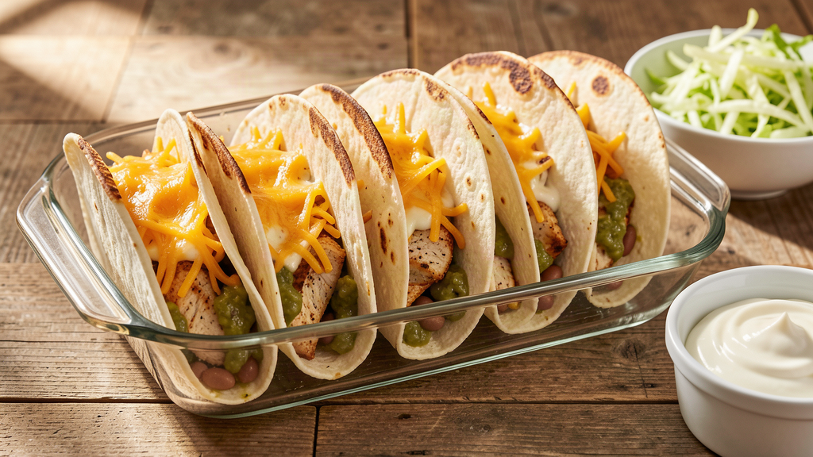
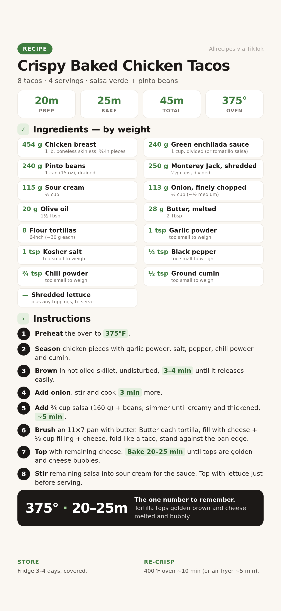

Seasoned chicken and pinto beans in a creamy green sauce, folded into buttered tortillas with cheese and baked until the tops crunch. Makes 8 tacos — dinner for 4.


📱 For your phone — tap to open the full-size card, then save it to Photos.
For 8 tacos. Grams lead; volume in the small line.
Weigh if you can. Set the bowl on the scale, tare between ingredients, go by grams.
Do it first — the filling comes together fast and you want the oven ready.
Pat 454 g (1 lb) chicken pieces dry, then toss with garlic powder, 1 tsp salt, ½ tsp pepper, ¾ tsp chili powder and ½ tsp cumin. Coat well.
Heat 20 g (1½ Tbsp) olive oil in a large skillet over medium-high. Add the chicken in a single layer and cook undisturbed 3–4 min until browned and it releases from the pan easily.
Don't stir early. Moving it before the crust sets steams the meat instead of browning it — that's where the flavor lives.
Stir in 113 g (½ cup) chopped onion and cook, stirring occasionally.
What to expect: onion softens and edges of the chicken look golden.
Stir in 160 g (⅔ cup) of the salsa and the drained beans. Reduce heat slightly and simmer ~5 min, stirring occasionally, until slightly thickened and creamy. Reserve the remaining 80 g (⅓ cup) salsa for the sauce.
Brush the sides and bottom of an 11×7 baking dish with some of the 28 g (2 Tbsp) melted butter.
Brush one side of each tortilla with remaining butter. Lay it in the dish, add ~15 g cheese on the bottom, ~⅓ cup filling, then a couple more tablespoons of cheese. Fold the tortilla up like a taco and press it against the pan edge.
Lean them on each other. The folded tacos support each other against the pan walls — that's what keeps them upright in the oven.
Sprinkle any remaining cheese over the tops of all the tacos.
Until the tortilla tops are golden brown and toasted and the cheese is melted and bubbly.
What to expect: the standing tortillas crisp up, edges darken, cheese browns in spots.
Mix the reserved 80 g (⅓ cup) salsa into 115 g (½ cup) sour cream.
Lettuce goes on last so it stays crisp. Serve with the sour cream sauce on top or on the side.
The filling was too wet — simmer longer next time until it visibly thickens, and don't skip brushing the tortillas with butter.
Pack them snug against each other and the pan walls, fold-side down against the edge. A smaller dish holds them tighter.
Rack was too high or the dish was foil-covered — bake uncovered on the middle rack.
Pieces were too big or over-simmered. Keep them at ¾ inch and pull the skillet as soon as the filling thickens.